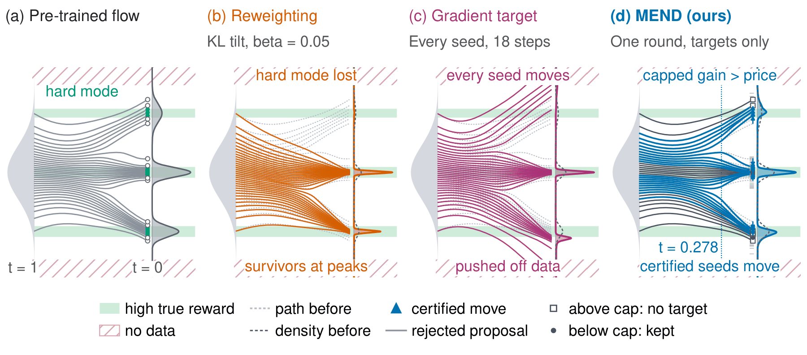
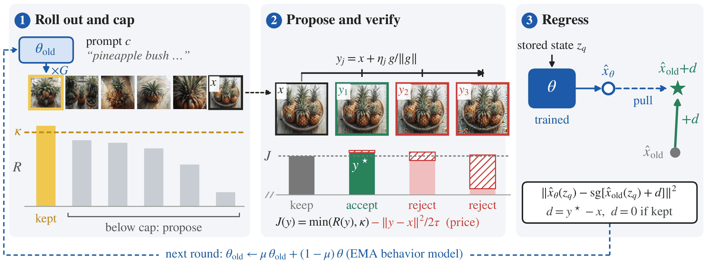
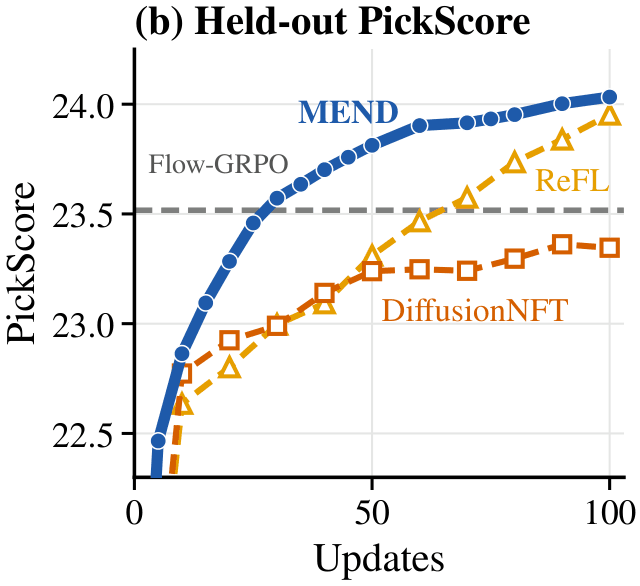
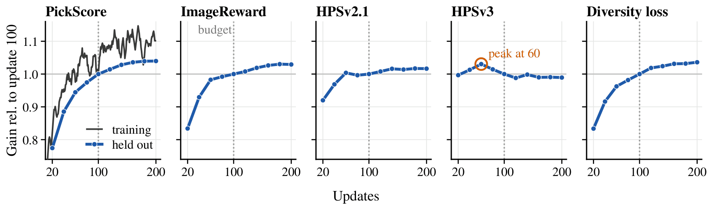

Thesis. Reward fine-tuning of flow models is missing a decision. Somebody has to say, for each sample, whether it should change and how far. MEND makes that decision with one rule: a move is accepted only when its reward gain exceeds a price that grows with the square of its length.
Main technical point. The accepted moves become velocity targets, and the model fits them by regression. The loss has no KL term, no frozen reference model and no advantage weights.
Practical implication. On SD3.5-M, 100 updates and 10.0 GPU-hours are enough to pass a Flow-GRPO adapter trained for about 4k updates on five of six evaluators, at the same distance to the base model's images.
The missing decision
A reward model such as PickScore[1] gives an image a number. Fine-tuning a text-to-image model on that number sounds simple, and the field has three ways to do it.
Policy-gradient methods such as Flow-GRPO[2] sample a group of images per prompt and reweight their trajectories by how far each one sits above the group average, under a KL penalty. Weighted-regression methods such as DiffusionNFT[3] reweight the model's own samples inside a regression loss. Both change how much each existing sample counts. Neither says where a weak sample should go. The Flow-GRPO and DiffusionNFT models we compare against use about 4k and 1.7k updates.
Reward backpropagation, as in ReFL[4] and DRaFT[5], does supply a direction. It differentiates the reward through sampling and follows the gradient. But the gradient moves every sample, including the ones that already score well, and nothing checks that a move earns its size.
When I lined the three up, the same gap showed in each. A KL penalty limits how far the distribution drifts as a whole. A frozen reference does the same. None of these terms looks at one sample and decides whether changing it is worth it. That decision is what MEND adds.

The toy above shows both failures in one dimension. Reweighting concentrates on the samples that already sit on a peak, and the hard mode starves. Unchecked ascent moves everything, and some of the mass leaves the data.
A move must pay for its distance
The principle fits in one sentence. A sample should move only when the reward it gains pays for the distance it travels.
Two things follow from taking that sentence seriously. First, a sample that already scores well has little to gain, so it should stay where it is. Second, a long move needs a large gain to justify it, and a short move needs only a small one. We write the second point as a quadratic price. For a sample \(x\) and a candidate \(y\), the objective is
Here \(R_\kappa=\min\{R,\kappa\}\) is the reward capped at \(\kappa\), and \(\tau\) sets the price of distance. This is the proximal-point objective from optimization[6]. We do not solve it over all of latent space. We evaluate it on a handful of decoded candidates, and the unchanged sample is always one of them. Staying put costs nothing, so a move has to beat it.
Cap, propose, verify, regress
One training round has four steps.

Cap. A lagged copy of the model, the behavior adapter, generates a group of images for each prompt. We set the cap \(\kappa\) at the 0.75 quantile of the group's rewards. Samples at or above it get no move, and \(R_\kappa\) gives no credit for going past it.
Propose. Each sample below the cap gets three proposals along its normalized reward gradient \(g\):
Normalizing the gradient makes each step a length, whatever the reward's scale. Every proposal is decoded and scored once. The decision uses the reward the proposal reached. It does not trust the gradient's promise.
Verify. We compute \(J\) for the sample and its three proposals and keep the best. Ties favor staying.
Regress. Let \(d=y^{\star}-x\) be the accepted displacement, or zero if the sample stayed. At a stored state \(z_q\) from the rollout, the trained model matches the behavior model's velocity shifted by that displacement:
A kept sample asks the model to do what it already does. A moved sample asks for exactly the correction \(d\). That is the whole loss. We call it proximal velocity matching, because it is ordinary velocity matching onto a target that the proximal rule selected. The sampler is never differentiated.
One sample, worked through
The numbers here are made up to show the arithmetic. Take a group whose cap is \(\kappa=0.86\), a sample with reward \(0.80\), and a price \(\tau=1\). The three steps cost \(\eta^2/2\tau\), which is 0.005, 0.02 and 0.08. Suppose the decoded proposals score 0.83, 0.87 and 0.88.
| Candidate | Step | Reward | Capped | Price | \(J\) |
|---|---|---|---|---|---|
| stay | 0 | 0.80 | 0.80 | 0 | 0.800 |
| \(y_1\) | 0.1 | 0.83 | 0.83 | 0.005 | 0.825 |
| \(y_2\) | 0.2 | 0.87 | 0.86 | 0.02 | 0.840 |
| \(y_3\) | 0.4 | 0.88 | 0.86 | 0.08 | 0.780 |
The verdict picks the middle step. The longest proposal has the highest raw reward and still loses to doing nothing. The cap gives it no credit above 0.86, and it costs four times as much as the middle step. Gradient ascent has no such check. It moves every sample in the batch.
The same arithmetic gives a guarantee. Every accepted target satisfies
so no sample can move farther than \(\sqrt{2\tau(\kappa-R_\kappa(x))}\). In the example that bound is about 0.35, which rules out the 0.4 step before it is scored. As a sample nears the cap its headroom goes to zero, and so does the largest move it can receive. A second result in the paper shows that, at the behavior parameters, the gradient of the regression loss is reward backpropagation restricted to the accepted samples and scaled by their chosen steps. MEND keeps the direction that backpropagation offers and adds the two decisions it lacks, which samples move and how far.
The price \(\tau\) is not tuned by hand during a run. It is fixed within a round and adjusted between rounds to target an acceptance rate of 30% to 60% among proposed samples.
What the results show
We train SD3.5-M[7] on PickScore under the equal-budget protocol of Zhou et al.[8]: 48 prompts with 24 images each per update, a rank-32 LoRA, and 100 updates. ReFL and DiffusionNFT are the baselines under that protocol. Evaluation is DrawBench with 200 prompts and 5 seeds.

At equal budget MEND is ahead of both baselines at every evaluated update. It reaches PickScore 24.03 at update 100, against 23.92 for ReFL and 23.43 for DiffusionNFT. The same holds when the training reward is ImageReward, HPSv2.1 or CLIPScore.
Against the Flow-GRPO PickScore adapter, the 100-update MEND run scores higher on five of six evaluators at the same DreamSim distance to the base model's images, 0.313 for both. Flow-GRPO keeps the aesthetic score, 5.90 against 5.88. That is roughly 40 times fewer updates, and the run costs 10.0 GPU-hours on three GB200 GPUs.
The ablations show what the cap and the price buy. At a smaller development budget, the full rule accepts moves for 34% of seeds per round. Removing the cap raises that share to 45%, and removing the price raises it to 78%. Moving every seed below the cap gives the highest PickScore, 23.45 against 23.10 for the full rule, and the lowest diversity, 0.260 against 0.297. Restricting moves trades a little reward for diversity, and we take that trade.
The method is not specific to SD3.5-M. At the same update budget it raises PickScore on SD3-M from 20.36 to 23.70, and on the distilled Z-Image-Turbo from 22.86 to 24.10.
Limits
MEND needs a differentiable reward. The proposals come from the reward gradient, so a reward you can only query does not fit as is.
The guarantee is per round. It bounds each accepted move against the reward it gained in that round. It says nothing about the sum of a hundred rounds.
Longer training can over-optimize a reward. We ran a second PickScore run for 200 updates. The trained reward keeps rising, the held-out gains flatten, and HPSv3 peaks at update 60.

Single-reward runs show the same thing inside the 100-update budget. All four finish above the base on every held-out evaluator, but three of them show a held-out decline before update 100, and the CLIPScore and ImageReward runs end with the lowest held-out PickScore, 22.27 and 22.33. Many MEND images are also more saturated than the base, which reflects a preference of the reward. A per-sample price controls how far a sample moves. It does not make a narrow reward a good one.
References
- Y. Kirstain, A. Polyak, U. Singer et al., Pick-a-Pic: An Open Dataset of User Preferences for Text-to-Image Generation, 2023.
- J. Liu, G. Liu, J. Liang et al., Flow-GRPO: Training Flow Matching Models via Online RL, 2025.
- K. Zheng, H. Chen, H. Ye et al., DiffusionNFT: Online Diffusion Reinforcement with Forward Process, 2026.
- J. Xu, X. Liu, Y. Wu et al., ImageReward: Learning and Evaluating Human Preferences for Text-to-Image Generation, 2023.
- K. Clark, P. Vicol, K. Swersky, D. J. Fleet, Directly Fine-Tuning Diffusion Models on Differentiable Rewards, 2024.
- R. T. Rockafellar, Monotone Operators and the Proximal Point Algorithm, 1976.
- P. Esser, S. Kulal, A. Blattmann et al., Scaling Rectified Flow Transformers for High-Resolution Image Synthesis, 2024.
- W. Zhou, X. Zhu, L. Kong et al., On-Policy Self-Distillation in Diffusion Models, 2026.
Citation
@article{saini2026mend,
title = {MEND: RL for Flow Models via Proximal Velocity Matching},
author = {Saini, Shreshth and Birkbeck, Neil and Wang, Yilin and
Adsumilli, Balu and Bovik, Alan C.},
journal = {arXiv preprint},
year = {2026}
}